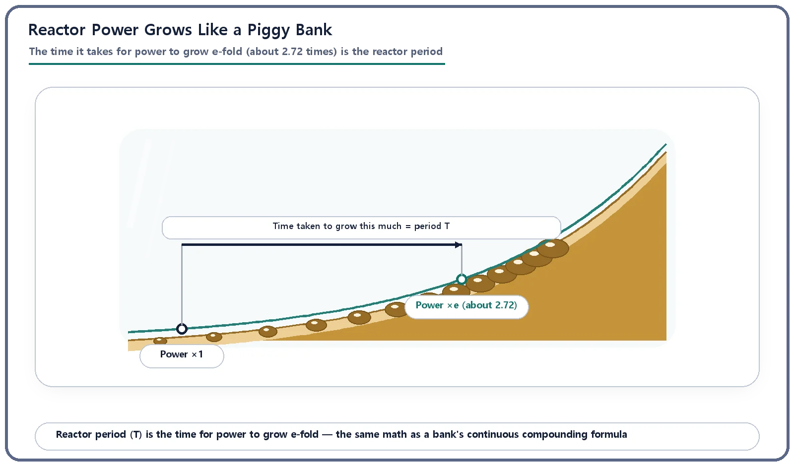
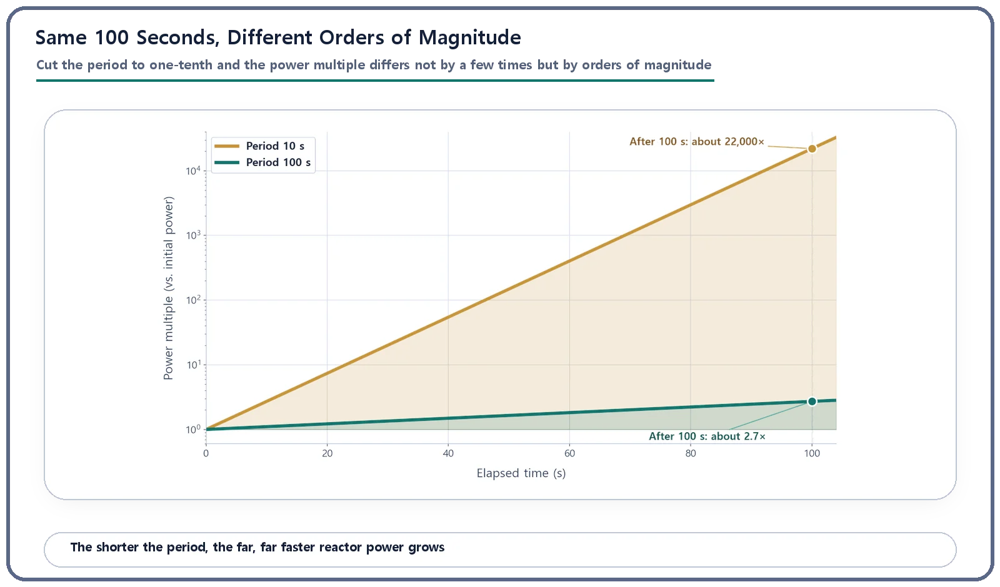

Reactor Kinetics & Reactivity · 106
Power That Grows Like Compound Interest — What the Reactor Period Really Means
Reactor power grows exponentially, and the period T tells you how long it takes to multiply by e, about 2.72 times.
The reactor period T is the time it takes reactor power to grow e-fold, about 2.72 times (or shrink to 1/e). Power follows P(t) = P₀ × e^(t/T), exactly the same math as a bank's continuous compounding, so a shorter period makes power climb dramatically faster: after 100 seconds, a 10-second period gives about 22,000 times the starting power, while a 100-second period gives only about 2.7 times.
How fast do microseconds add up?
Remember the neutron generation time? Neutrons are born and lost in microseconds, far too fast for human senses. So if those moments keep stacking up without pause, how fast does the power of the whole reactor grow?
One physical quantity answers exactly that question. It is called the reactor period. The name sounds like a repeating rhythm, but the idea is surprisingly close to savings-account arithmetic.
Interest on interest, inside a reactor
You have probably heard of compound interest. Interest is added to the principal, then interest is earned on that interest, and the balance climbs more and more steeply as time goes on. Picture a piggy bank whose coins multiply by the same percentage every day: barely changing at first, then visibly ballooning.
Reactor power behaves in just this way. When reactivity is greater than zero (meaning more neutrons are being born than are being lost), power does not rise in proportion to time. Like that piggy bank balance, it grows exponentially, ever more steeply. The yardstick for "how long it takes power to grow by a set factor" is the reactor period, usually written T.
Why a factor of about 2.718 (the constant e, the base of the natural logarithm), rather than 2 or 10? There is no deep reason. A bank's continuous-compounding formula comes out as an exponential with base e, so physics and engineering conventionally use the e-fold change as the reference whenever something grows by itself. So, in one line: the reactor period is the time it takes reactor power to grow e-fold (about 2.72 times). Written as a formula:
Power(t) = initial power × e^(elapsed time ÷ T)
A positive T means power is rising; a negative T means power is falling. And the smaller the magnitude of T (the shorter the period), the faster power grows or shrinks.

How long to double? Meet the doubling time
If "e-fold" feels unfamiliar, you can translate it into a friendlier number: the time to grow 2 times, called the doubling time. Mathematically, the doubling time equals the period T multiplied by the natural log of 2 (about 0.693). A 10-second period means power doubles in about 6.93 seconds; a 100-second period means about 69.3 seconds. It is the same sum as asking how long a bank deposit takes to double.
Does a shorter period really make that much difference?
Two numbers show why the nuclear world treats this so carefully. Take one reactor with a 10-second period and another with a 100-second period. After exactly 100 seconds, how much has each one's power grown?
Period 10 seconds: power has grown by e^(100/10) = e¹⁰, about 22,000 times the starting value.
Period 100 seconds: power has grown by e^(100/100) = e¹, only about 2.7 times.
The period was cut to one-tenth, yet the power multiple after the same time differs not by a few times but by whole orders of magnitude. That is the frightening (or fascinating) nature of exponentials, like a slightly higher interest rate producing an enormous gap in a balance decades later. That is why people who work with reactors can never be casual about the question "what is the period, in seconds?"

| Period T | Doubling time (0.693 × T) | Power after 100 seconds |
|---|---|---|
| 10 seconds | about 6.93 seconds | e¹⁰ ≈ 22,000 times |
| 100 seconds | about 69.3 seconds | e¹ ≈ 2.7 times |
So how is the period actually set?
If the generation time is only microseconds, shouldn't the period be just as short? Under a very simple assumption (that every neutron in the reactor is a prompt neutron), the period works out to roughly generation time ÷ reactivity. Because the generation time is so tiny, that simple estimate says even a very small increase in reactivity should drive the period down not to one second but to milliseconds.
Fortunately, real reactors do not respond that violently. As covered earlier, a very small fraction of fission neutrons are delayed neutrons that emerge late. Thanks to these few "slowpoke" neutrons, the reactor periods actually observed are far longer than the simple estimate, typically from a few seconds to tens or hundreds of seconds. The formula that accounts precisely for reactivity, generation time and the delayed-neutron fraction to compute the real period is called the inhour equation. Working through it goes fairly deep, so here we only note that such a formula exists and that it determines the period.
One more point: at the instant reactivity changes in a sudden step, power does not immediately follow a smooth exponential. It first jumps up (or drops) slightly for a very short time, and only then settles into a steady "stable period" governed by the delayed neutrons. When people say "the reactor period is so many seconds," they usually mean this stable period.
Neighboring ideas that are easy to mix up
Generation time vs. period. Completely different scales: the generation time is the microscopic turnover time of one neutron generation (microseconds); the period is the resulting macroscopic rate of power change (usually seconds or more). Generation time is just one ingredient of the period.
Doubling time vs. period. The doubling time is the time to grow 2 times; the period is the time to grow e times (about 2.72). They are close cousins linked by a fixed ratio of about 0.693.
Reactivity vs. period. Reactivity (how far the reactor is from critical) is closer to a cause; the period is the result, produced jointly by reactivity, generation time and the delayed-neutron fraction.
Inhour equation vs. period. The inhour equation is the calculating formula that extracts the real period from reactivity; the period is what that calculation produces.
When the piggy bank scale becomes a control-room gauge
This compound-interest arithmetic is not just an analogy; it appears on real control-room instruments. During reactor startup, the rate at which power is rising is sometimes displayed directly as the period in seconds, and sometimes converted into a startup rate expressed in decades per minute (how many factors of ten power climbs each minute). Doing the math, a period of about 26 seconds corresponds to a startup rate of one decade per minute (power rising tenfold in one minute). The operator's gauge speaks the same exponential language as a savings calculation.
A period that becomes too short, a sign that power is rising too fast, is also one of the conditions the reactor protection system monitors. Exactly how short a period triggers an automatic shutdown differs by reactor type and designer, so this article does not pin down a specific number. What is certain is that this single number packs in how urgently power is changing, which is why both operations and safety design keep a constant eye on it.
Key takeaways
The reactor period (T) is the time for power to grow e-fold (about 2.72 times), or shrink to 1/e: the same math as continuous compounding. The doubling time is about 0.693 × T.
Cut the period to one-tenth and the power multiple after the same time changes by orders of magnitude (period 10 s vs. 100 s: about 22,000× vs. about 2.7× after 100 seconds).
A simple estimate from generation time and reactivity says the period should be extremely short, but delayed neutrons stretch real periods to a manageable few seconds to tens or hundreds of seconds.
The period is a practical number: it appears on control-room gauges (startup rate) and in protection-system monitoring.